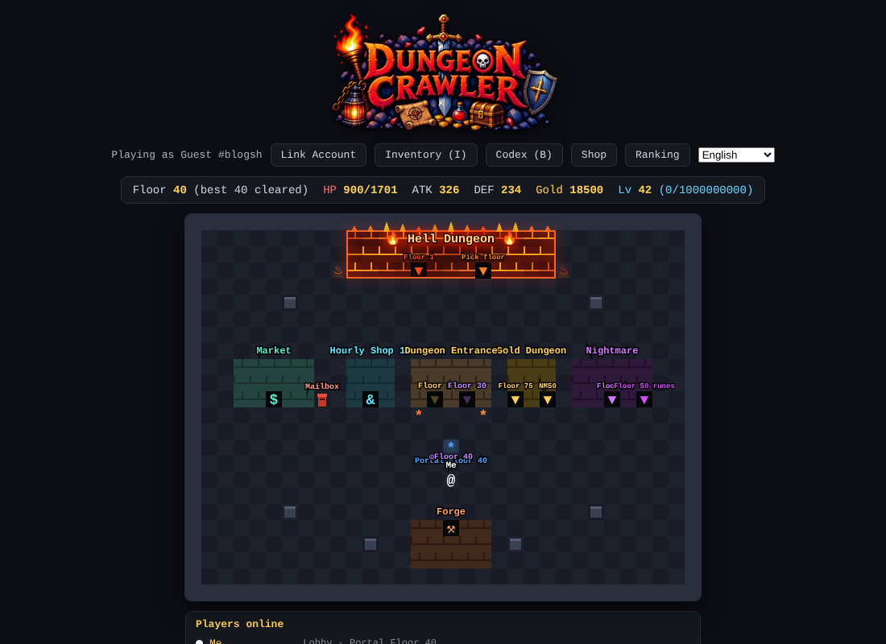
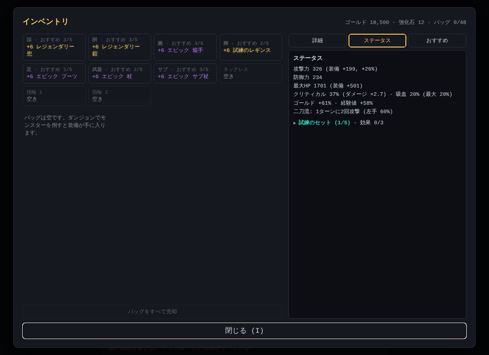
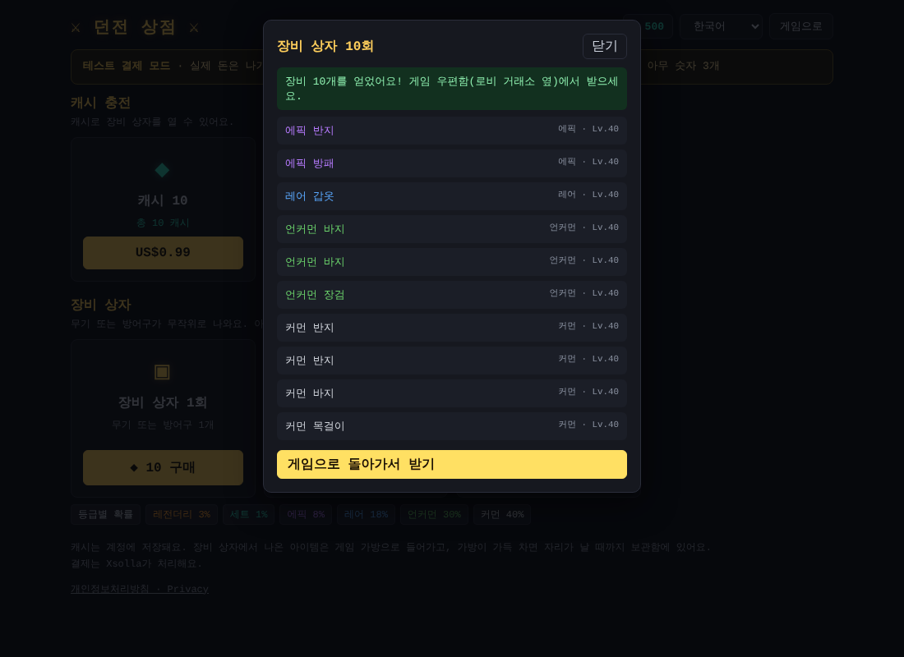
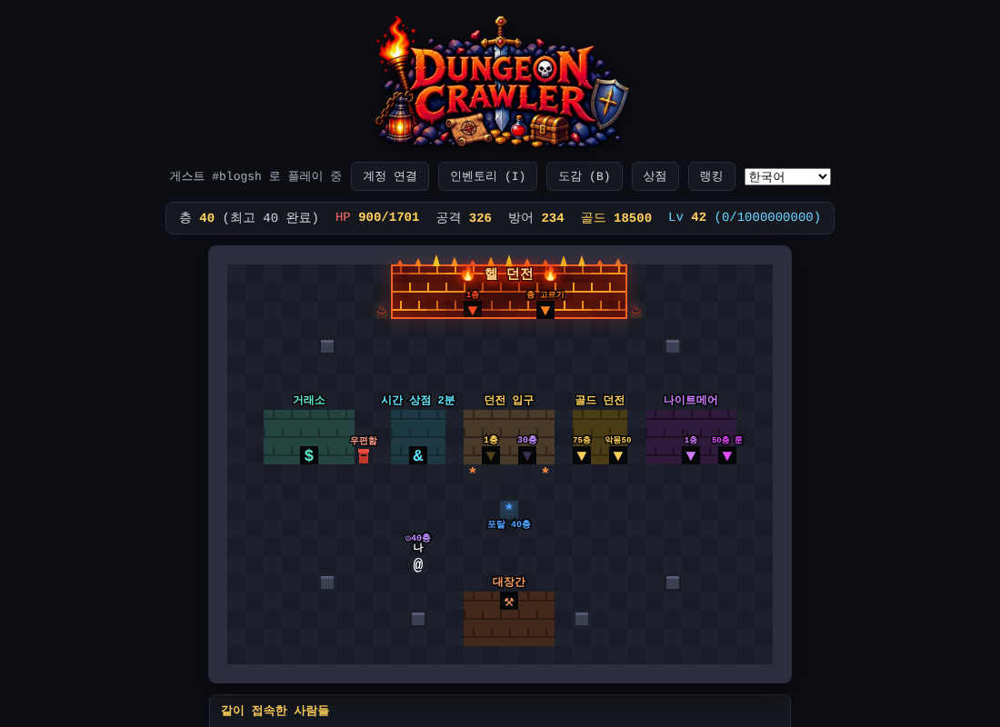
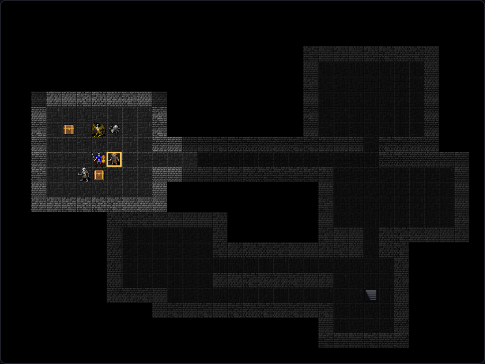
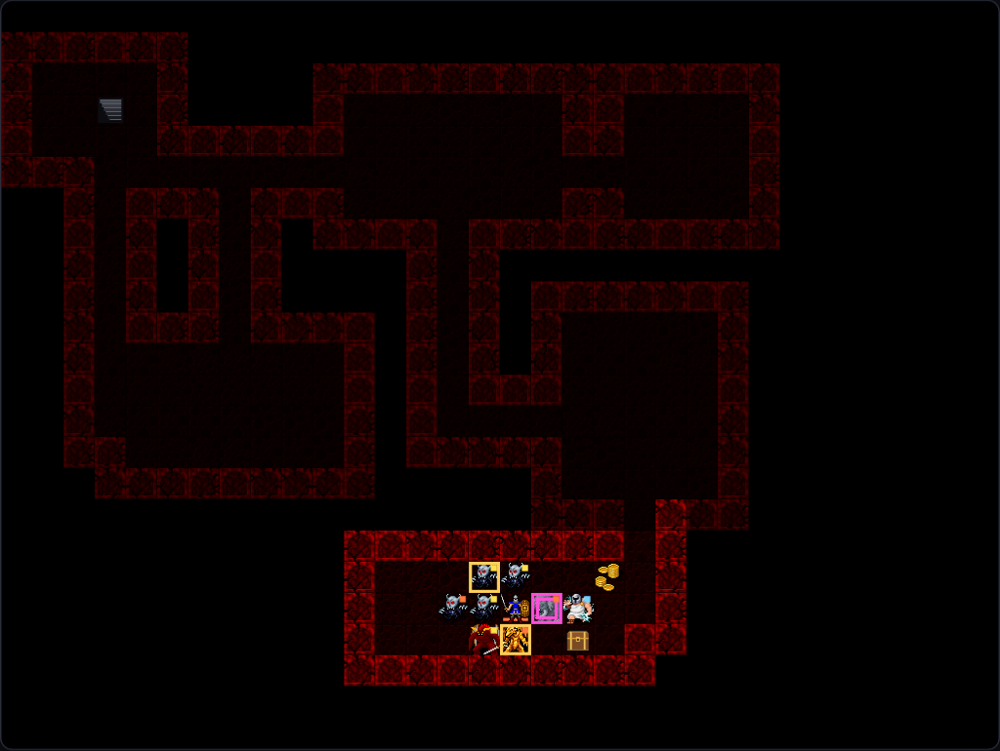
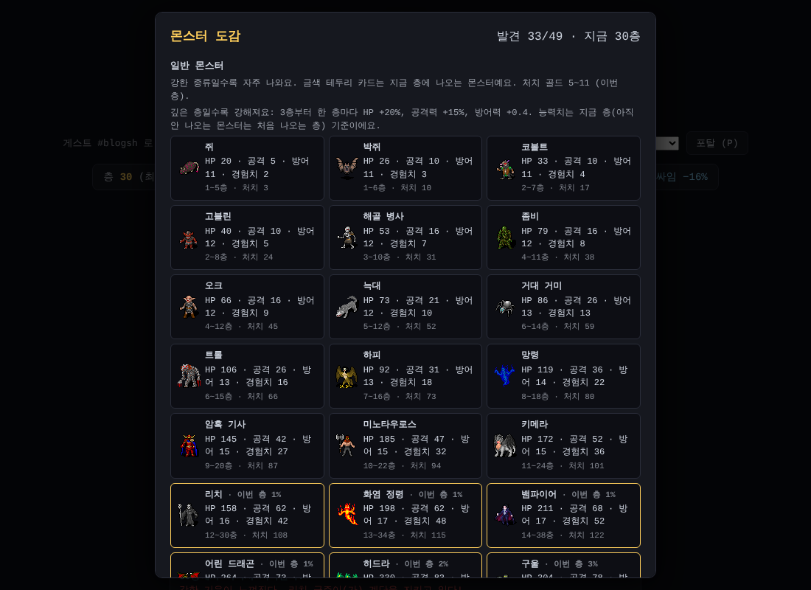
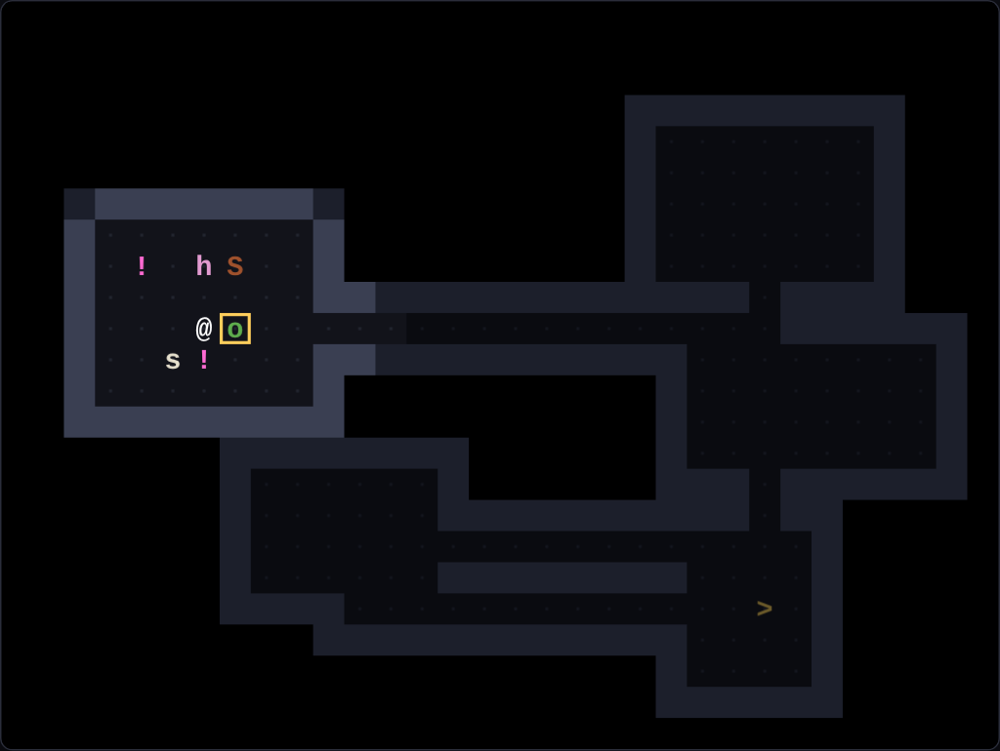
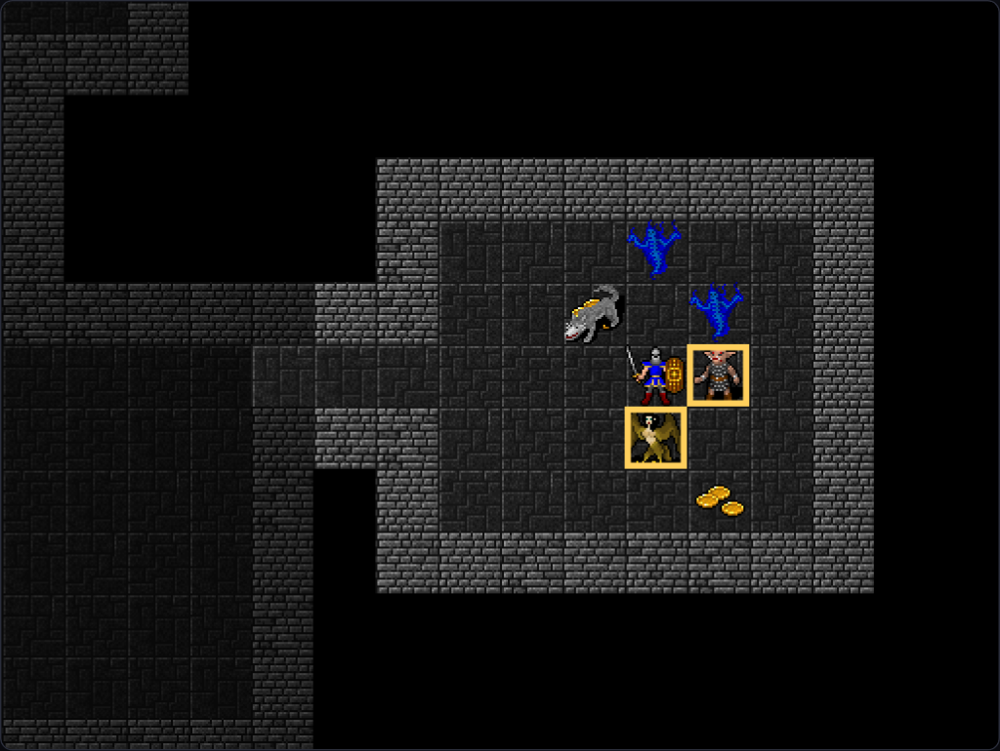

던전 크롤러, 영어와 일본어를 배우다
지금까지 던전 크롤러는 한국어로만 즐길 수 있었어요. 오늘은 Claude Code와 함께 게임 전체를 영어와 일본어로 옮기는 데 하루를 거의 다 썼고, 남은 시간에는 장비 상자를 서버가 직접 열어 주는 결제 흐름을 만들었어요.
번역: 용어집부터 차근차근
상점은 이미 영어·일본어를 지원했는데 정작 게임은 한국어뿐이었어요. 번역할 문장을 세어 보니 게임 화면, 아이템, 몬스터, 최고 조합, 랭킹 페이지를 합쳐 약 1,300개였어요. 그중 약 400개는 "○○을(를) 받았다"처럼 중간에 값이 끼어드는 문장이라, 언어마다 문장 전체를 따로 만들어야 했어요.

그래서 바로 번역에 뛰어들지 않고 용어집부터 만들었어요.
- 등급·부위·능력치·세트·보석·룬·룬워드·유니크·몬스터·장소·경제 용어를 한곳에 모았어요
- 일반 몬스터는 영어·일본어 게임에서 흔히 쓰는 이름으로 번역해요
- 네임드 보스는 영어에서는 소리대로, 일본어에서는 일본에서 익숙한 이름으로 정했어요
- 예: 구미호는
Gumiho/九尾の狐, 염라대왕은 일본어로閻魔大王
- 예: 구미호는
- 룬은 번역하지 않는 고유 명사라 어느 언어에서든 한글(
가,나…) 그대로예요 - 흡혈은
Lifesteal/吸血, 아이템 발견은Magic Find/マジックファインド로 정했어요
아이템 이름도 고민거리였어요. 한국어 이름은 "고대 +10 지옥의 얼음 레전더리 투구"처럼 조각을 이어 붙여 만들거든요. 영어는 영어식 순서를 따르기로 해서 +10 Ancient Legendary Hell Helm of Frost 같은 이름이 나와요.
번역 틀 만들기
다음은 번역을 담을 틀이에요. 코드 안의 한국어 원문을 그대로 열쇠로 쓰고, 영어·일본어 표에 "원문 → 번역"을 적는 방식이에요.
- 코드를 읽을 때 무슨 문장인지 바로 보여서 편해요
- 번역이 빠진 문장은 한국어 원문을 그대로 보여 줘요
- 빠진 번역과 쓰지 않는 문구를 찾아 주는 검사 도구도 같이 만들었어요
처음 전체 테스트를 돌렸을 때 8개 테스트가 실패했어요. "번역 없음"일 때 한국어 원문 대신 빈 값이 나와서 보석·룬 이름이 사라진 거였어요. 고친 뒤에는 모두 통과했고, 번역 틀을 거쳐도 한국어 문구 1,661줄이 예전과 똑같다는 것도 확인했어요.
화면 하나하나
번역은 단계를 나눠 진행했어요.
- 인벤토리, 아이템 상세, 대장간, 상점, 몬스터 도감, 거래소, 우편함, 쓰러짐·부활 화면
- 전투 기록, 네임드 보스 패턴, 로비 건물 이름, 추천 탭, 업데이트 안내
- 최고 조합 페이지와 랭킹 페이지
- 서버가 보내 주는 문구: 랭킹의 장비 보기, 우편 메모, 게스트 이름(
Guest #…/ゲスト #…)
큰 숫자 표기도 언어마다 달라서 한국어의 "만"이 영어에서는 k, 일본어에서는 万으로 바뀌어요. 번역 문구는 518개에서 시작해 마지막에는 1,012개가 됐고, 영어·일본어 모두 빠진 것이 없어요.
손이 많이 간 부분도 있었어요.
- 예전 랭킹 기록에는 한국어 아이템 이름만 남아 있어서, 이름을 조각으로 나눈 뒤 그 언어 순서로 다시 조립해요. 아이템 12,026개로 확인했더니 모두 게임이 만든 이름과 같았어요
- 언어를 바꾸기 전에 만들어진 층의 몬스터 이름도 지금 언어로 다시 지어요
- 선물 우편의 메모도 언어별로 따로 쓸 수 있게 했어요
다 마친 뒤 게임 다국어를 켰어요. 이제 화면 위쪽에서 🌐 자동 · 한국어 · English · 日本語 중에 고를 수 있어요. 주소 뒤에 ?lang=en을 붙여 영어로 미리 보기도 할 수 있어요.
언어 자동 설정: 접속한 나라에 맞춰
처음에는 상점에서 고른 언어를 게임도 따라가게 했는데, 개발자의 요청으로 방향을 바꿨어요. 게임 언어는 이제 이 순서로 정해져요.

- 게임에서 직접 고른 언어가 있으면 그 언어
- 없으면 접속한 나라: 한국은 한국어, 일본은 일본어, 그 밖은 영어
- 나라를 모르면 브라우저 언어
서버는 나라 코드만 알려 주고, IP는 저장하지도 기록하지도 않아요. 게임은 나라를 하루에 한 번만 물어보고, 언어 고르기의 🌐 자동을 누르면 직접 고른 언어를 지우고 다시 나라에 맞춰요.
그런데 막상 켜 보니 서버가 나라를 알아낼 방법이 없어서 늘 "모름"이 나왔어요. 그래서 무료 나라 데이터베이스인 DB-IP의 IP to Country Lite와 그걸 읽는 코드를 저장소에 넣었어요. 데이터베이스는 매달 새로 받는데, 받은 파일이 제대로 동작하는지 확인한 뒤에만 바꿔 넣어요. 개인정보처리방침에도 이 내용과 DB-IP 출처를 적었어요. 브라우저에서 확인해 보니 한국으로 잘 나왔어요.
테스트 정리
그동안 회귀 테스트는 작업 환경에만 있었어요. 오늘 64개 테스트를 저장소로 옮겼어요.
- 게임 화면 테스트, 서버 API 테스트, 번역 검사가 모두 들어 있어요
- 테스트 안의 키는 모두 가짜예요
- 실행 결과(로그·화면 캡처)는 최근 3번만 남기고, 저장소에는 올리지 않아요. 한 번에 20 MB 안팎이라서, 올리면 나중에 지워도 기록에 계속 남기 때문이에요
오래 실패한 채 남아 있던 테스트도 정리했어요. 지금은 쓰지 않는 예전 서버를 검사하던 테스트는 지금 서버에 맞게 다시 썼고, 장신구가 생기기 전 규칙으로 검사하던 테스트도 고쳤어요.
가끔만 실패하던 테스트
혼자 돌리면 통과하는데 전체를 돌릴 때만 가끔 실패하는 테스트가 있었어요. 원인은 게임이 아니라 테스트 쪽이었어요. 새로고침 뒤 1.5초만 기다리고 바로 움직여서, 컴퓨터가 느릴 때는 게임이 서버와 맞추기를 끝내기 전에 확인을 해 버린 거예요.
- 서버 응답을 일부러 늦춰서 실패를 그대로 재현했어요
- 응답을 실제로 받을 때까지 기다리도록 테스트를 고쳤어요
- 저장 내용이 우연히 그대로라 확인이 어긋나던 남은 원인도 찾아 고쳤어요
이제 전체 실행에서 실패가 0개예요. 하루 마지막에는 테스트가 68개 파일까지 늘었어요.
결제 웹훅과 상자 지급
게임 상점에서는 캐시로 장비 상자를 살 수 있어요. 지금까지는 결제가 끝나면 브라우저가 상자를 열어 아이템을 만들었어요.
왜 서버가 열어야 할까요
브라우저는 플레이어의 컴퓨터에서 돌아가요. 마음먹으면 그 안의 코드나 데이터를 건드릴 수 있다는 뜻이에요. 게다가 서버에는 상자를 연 기록이 없어서, 그 아이템이 정말 산 상자에서 나온 건지 확인하기 어려웠어요.

그래서 이렇게 바꿨어요. 결제가 끝나면 Xsolla가 게임 서버에 웹훅(결제 결과를 알려 주는 서버끼리의 연락)을 보내요. 서버가 이걸 받아 상자를 열고, 아이템을 그 사람의 게임 우편함으로 보내요. 브라우저는 결과를 보여 주기만 해요.
단계별로 쌓아 올린 과정
- 1단계, 기록만: 웹훅이 진짜 Xsolla에서 왔는지 서명을 확인해요. 같은 웹훅이 여러 번 와도 한 번만 기록하고, 이메일 같은 개인정보는 원본 대신 암호화한 값만 저장해요
- 사용자 확인: 게임에 한 번도 로그인한 적 없는 사용자라면 Xsolla에 "없는 사용자"라고 답해요. Xsolla의 웹훅 테스트를 모두 통과했고, sandbox(시험 결제)로 실제 흐름도 확인했어요
- 2단계, 서버가 상자 열기: 상자를 사면 서버가 열어 아이템마다 우편 한 통씩 보내요
- 기록과 지급을 한 번에 처리해서, 같은 웹훅이 다시 와도 두 번 지급되지 않아요
- 중간에 실패하면 서버가 오류로 답하고, Xsolla가 다시 보내 줘요
- 상점은 서버 결과를 최대 20초 기다렸다가 아이템 목록을 보여 줘요. 늦어지면 "곧 게임 우편함에 도착해요"라고 안내해요
- 환불: 아직 받지 않은 상자 우편은 우편함에서 사라지고, 이미 받은 아이템은 랭킹·거래소에서 인정하지 않아요
서버가 아는 아이템만 인정
마지막으로 상자 아이템은 서버가 지급했거나 기록해 둔 것만 인정하도록 좁혔어요. 그냥 좁히면 예전에 산 상자 아이템이 갑자기 인정되지 않을 수 있어서, 서버에 남은 예전 상자 아이템을 먼저 찾아 등록한 다음에 바꿨어요. 확인해 보니 예전 상자 아이템은 시험 구매로 생긴 1개뿐이었어요. 혹시 문제가 생기면 예전 규칙으로 되돌릴 수도 있어요.
개발 블로그를 열었어요
지금 읽고 계신 이 블로그도 오늘 만들었어요. 그동안 날짜별로 써 온 개발 일지를 읽기 좋게 다시 써서, 첫 삽을 뜬 10월 14일부터 하루 한 편씩 올렸어요.
- 일지를 쓸 때마다 같은 날 블로그 글도 함께 고치고, 게임과 같이 배포돼요
- 공개하면 안 되는 서버 정보나 개인정보가 글에 들어가면 블로그를 만들지 않고 멈추게 했어요
- RSS로 새 글을 받아 볼 수 있어요
- 글마다 게임 화면 이미지도 넣었어요. 게임을 자동으로 띄워서 장면을 찍어요
게임 로고가 생겼어요
하루의 마지막 선물은 게임 로고예요. 불타는 횃불과 검, 해골이 박힌 "DUNGEON CRAWLER" 로고를 받아서 게임 맨 위의 글자 제목 자리에 넣었어요. 해골과 두 자루 검이 그려진 아이콘은 브라우저 탭과 휴대폰 홈 화면 아이콘이 됐어요.

이 밖에 서버 점검도 했어요.
글자에서 픽셀 그림으로
로그라이크는 원래 @와 알파벳으로 그리는 장르라서 지금까지 던전 크롤러도 글자로만 그렸어요. 이제 게임이 거의 다 만들어져서 2D 픽셀 그림을 입혔어요. 무료 그림 모음과 직접 그린 그림을 섞는 방법으로요.

무료 그림 + 직접 그린 그림
- 바탕은 오래된 로그라이크 Dungeon Crawl Stone Soup의 타일이에요. 그중 저작권자가 CC0(퍼블릭 도메인)으로 공개한 것만 모은 모음을 썼어요. 바닥·벽, 무기·방어구, 몬스터 대부분이 여기서 왔어요
- 플레이어 기사는 몸·다리·장화·갑옷·투구·검·방패 7장을 겹쳐서 만들었어요
- 모음에 없는 것은 Claude Code가 코드로 한 점씩 찍어서 그렸어요. 계단, 던전 상점, 보물상자, 보석 5가지, 바지가 그래요
- 헬의 네임드 보스 다섯은 한국 전설 속 존재라 딱 맞는 그림이 없었어요. 비슷한 그림의 색을 바꾸고 장식을 그려 얹었어요. 구미호는 흰 여우에 아홉 꼬리, 저승사자는 검은 사신에 갓, 염라대왕은 붉은 도포에 면류관을 씌웠어요
- 그림 107개를 한 장으로 모으는 과정도 도구로 만들어서, 그림을 바꾸면 명령 한 번으로 다시 만들어요

지역마다 다른 던전
일반 던전은 회색 돌, 나이트메어는 남색 대리석에 보라 벽, 헬은 검붉은 화산 바닥과 용암 벽, 골드 던전은 사암으로 칠했어요. 지금 보이지 않는 칸은 어둡게, 장비는 등급 색으로 은은하게 빛나게 했어요. 정예·보스 테두리나 화상·느려짐 표시는 그림 위에 그대로 남겼어요.
화면 크기는 그대로, 그림은 선명하게
지도 전체가 한 화면에 보이는 지금 크기를 지키고 싶었어요. 그래서 한 칸의 크기는 그대로 두고, 캔버스 속 픽셀만 1.6배로 늘려서 32픽셀 그림이 그대로 들어가게 했어요. 도감에도 만난 몬스터의 그림이 나와요.

예전 글자 화면도 그대로
글자 화면을 좋아하는 분을 위해 글자로 보기 버튼을 넣었어요. 누르면 예전 화면으로 돌아가고, 기기에 기억돼요. 그림을 받지 못하는 환경에서도 저절로 글자로 그려요.

방 하나만 크게: 가까이 보기
그림을 넣고 나니 한 칸이 작아서 기사와 몬스터가 잘 안 보였어요. 그래서 던전은 2배로 가까이 보이게 바꿨어요. 화면 크기는 그대로인데, 32×24칸 지도 중 플레이어 주변 16×12칸(방 하나 정도)만 보여요. 플레이어가 움직이면 화면이 따라가고, 지도 끝에서는 화면이 더 밀려나지 않아요.

- 32픽셀 그림이 정확히 2배로 커져서 흐려지지 않아요
- 계단을 찾을 때처럼 전체가 궁금하면 전체 지도 (M) 버튼이나 M 키로 바로 바꿔 볼 수 있어요. 고른 시점은 기기에 기억돼요
- 로비는 건물 이름이 적힌 마을 지도라 지금처럼 전체를 보여 줘요
다음에는
픽셀 그림의 첫 판이 들어갔으니, 실제로 해 보면서 어두운 칸의 밝기나 몬스터 그림을 다듬을 거예요. 바뀐 던전이 궁금하다면 게임에 들어가 보세요. 영어나 일본어로도 바꿔 볼 수 있어요.